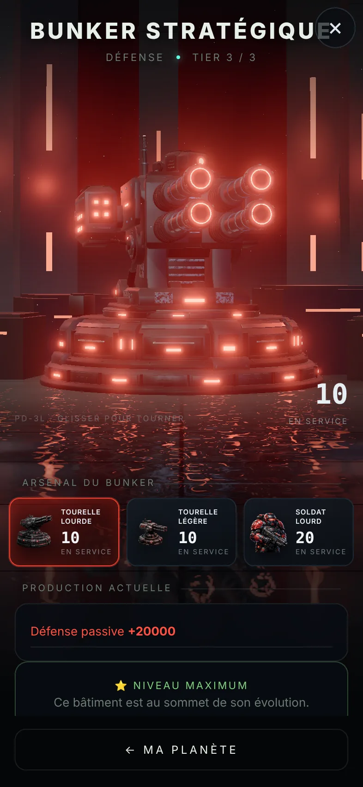
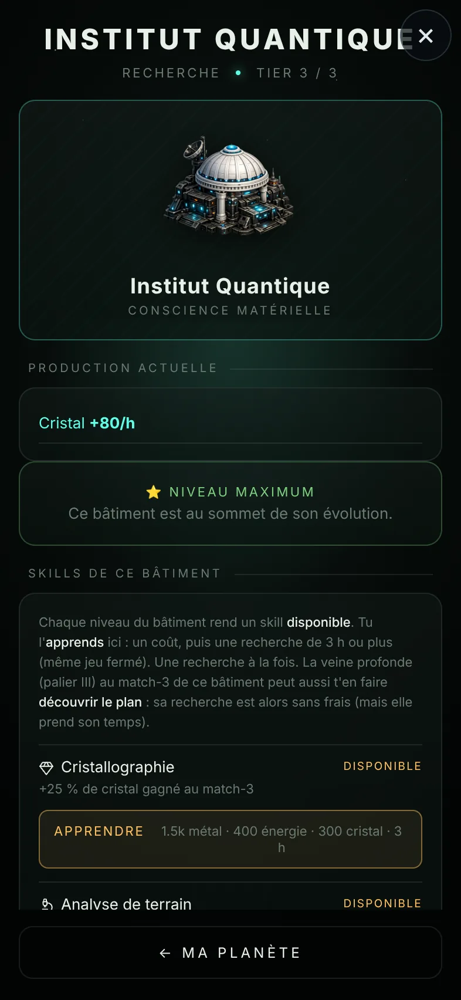
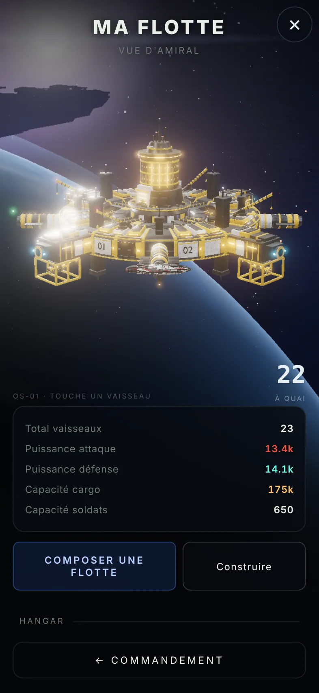
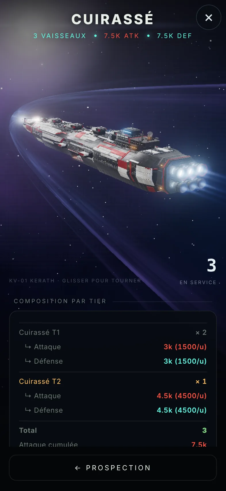
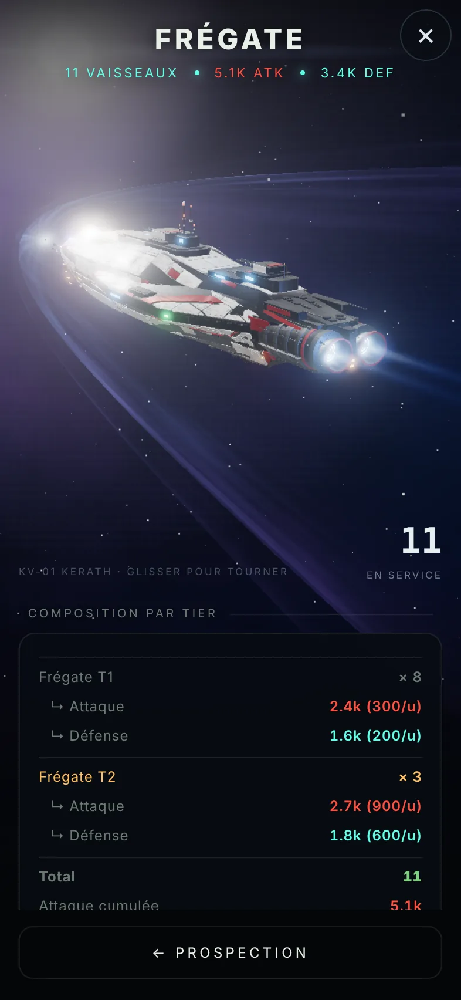
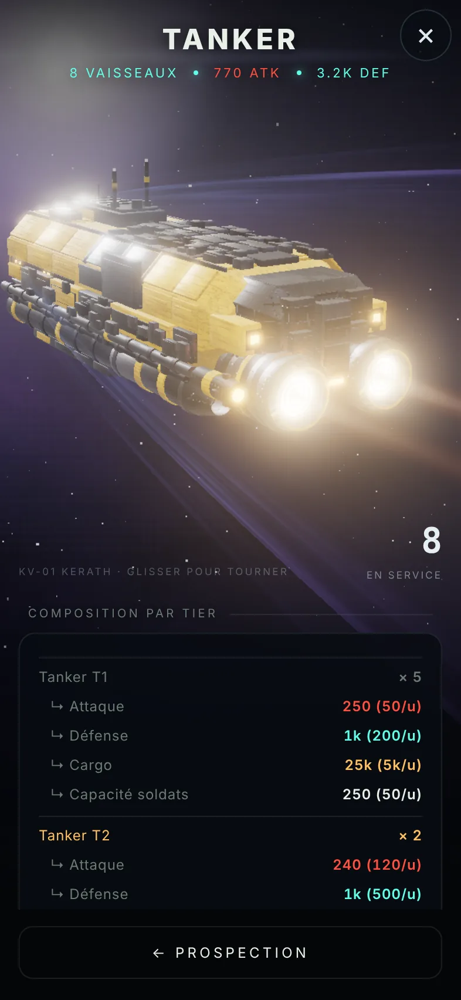

Le geste
Un match-3 qui creuse
Aligne trois pierres ou plus sur une grille d'hexagones. Plus tu descends, plus la veine est riche, et plus le sous-sol devient instable.
cascades · bombes hexagonales · paliers I à III
L'empire
Une planète à faire grandir
Vingt-cinq parcelles, des bâtiments qui changent de silhouette à chaque tier, une production qui tourne même quand tu dors.
arbre technologique visible · vocations planétaires
Le vide
Un univers qui se gagne
Personne ne te donne la carte. Tes sondes ramènent des signatures, tes tankers ouvrent des routes, et d'autres commandants guettent.
raids entre joueurs · ports francs · colonies
COUCHE 1 · SURFACE · ALT 0 km
Tout commence sous tes pieds.
Une planète sans nom flotte dans le vide. Tu en es le premier capitaine. Avant les flottes et les alliances, il y a la roche, et ce qu'elle cache.

Le forage
Chaque partie de match-3 est une descente.
Les alignements extraient des ressources. Treize coups, trois paliers. À chaque palier, tu choisis : sécuriser tes gains ou continuer, au risque de tout faire s'effondrer.
Extraction minimaleLa parcelle est conquise. Tu peux déjà repartir avec tes gains.
Rendement optimalNettement plus de ressources.
Veine profondeLe gros butin. Trois veines profondes et ton antenne s'allume.
Les tuiles changent selon le lieu : au Laboratoire on aligne des cristaux de données et des singularités de calcul, pas des cailloux.

 JOURNUIT
JOURNUIT
La planète
Une capitale vivante, qui suit ton heure.
Ta planète est une carte 3D de parcelles hexagonales de 50 mètres, encadrées de bordures lumineuses. Forêt luxuriante le jour ; la nuit, les façades s'éclairent par le bas, les cœurs d'énergie bleus et les entrées ambrées prennent le relais.
Mine, Centrale, Laboratoire, Caserne, Chantier naval, Bunker, Comptoir, Raffinerie, Silos : chaque bâtiment a sa forme, sa production et ses skills.
Les tiers
Un bâtiment amélioré, ça se voit de loin.
Chaque tier change la silhouette et la production. Le Centre de commandement passe de la citadelle trapue à une tour immense, puis se couronne de satellites.
CENTRE DE COMMANDEMENT · CAPITALE · MODÈLE DU JEU


COUCHE 2 · ORBITE · ALT 400 km
Construis le chantier. Le ciel s'ouvre.
L'orbite n'existe pas tant que ton chantier orbital n'est pas bâti. Ensuite, ta station apparaît au-dessus de la planète, et avec elle ta flotte.

La flotte
Frégates, tankers, cuirassés. Et ce qu'ils transportent.
Le chantier assemble tes vaisseaux, la caserne forme tes soldats. Compose une flotte, choisis une cible, lance la mission. Une flotte engagée l'est pour de bon : pas de demi-tour en vol.
Les tankers sont les bêtes de somme de l'empire. Ils partent extraire, commercer ou coloniser, et vont toujours jusqu'au bout de leur route.
Hangar 3D
Les modèles du jeu, à faire tourner.



COUCHE 3 · ESPACE · ALT INCONNUE
La carte ne se donne pas. Elle se gagne.
Le Centre de prospection ouvre un immense plateau hexagonal. De loin, à peine quelques soleils. En t'approchant, des systèmes, des routes, des échos d'autres commandants.

La prospection
Trois sondes, des signatures, une action suivante.
RAPPORT · Sonde Radar Système A-K-4096 · couloir de passage────────────────────────────Trafic régulier détecté. Piste : « Route chantante » Cap relevé : A-K-4227 · cales lourdes Il y a 2 min. → Poser une balise pour voir passer les convois.
Les ports francs
Des stations uniques, où les commandants se croisent.
On y accoste pour chatter, échanger des ressources, écouter les rumeurs au comptoir. Chaque station a été modélisée à la main d'après une planche dessinée. Touche une carte pour la voir en 3D.
8 stations affichées. Au moins 47 autres restent à découvrir, réparties dans tout l'univers.
Les autres commandants
Tu n'es pas seul. Tu ne le sais juste pas encore.
RAIDS
Attaquer, être attaqué
Le combat se calcule côté serveur. Un défenseur battu voit ses stocks pillés et un bâtiment endommagé. Les tourelles comptent.
BAR DES DOCKS
Rencontres et affaires
Le bar galactique des ports francs, c'est le lieu où l'on se trouve, où l'on négocie, où l'on apprend ce qui se trame.
COLONIES
Une deuxième planète
L'Arche coloniale part, arrive, et devient la colonie : un nouveau centre de commandement, une nouvelle antenne qui écoute son propre secteur.
PAVILLONS
Une diplomatie sans paroles
Des pavillons prédéfinis pour dire allié, neutre ou menace, sans écrire un mot.
Bêta ouverte
Ta planète t'attend. Elle n'a pas encore de nom.
Starbyte se joue dans le navigateur de ton téléphone et s'installe comme une app. Ta partie est sauvegardée dans le cloud : même empire sur l'app, sur le navigateur, sur un autre appareil.